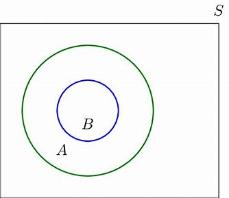

Subsets
A set whose elements are all contained within another set. The set A is a subset of B , if and only if every element of A is also an element of B represented with the symbol A ⊆ B. However if there are elements in a set A that are not in set B. A is not a subset of B. This is denoted as A⊈B
Note that to show that A is not a subset of B we only need to find a single x ∈ A such that x∈B. Also, this can be prooved by showing that if x belongs to A then x also belongs to B.
Note: Every set is a subset of itself. The empty set is a subset of every set.
Examples:
1. The set of all odd positive integers less than 10 is a subset of
the set of all positive integers less than 10.
2. The set of rational numbers is a subset of the set of real
numbers.
3. The set of all computer science majors at your school is a subset
of the set of all students at your school.

Proper subset When we wish to emphasize that a set A is a subset of a set B but that A= B, we write A⊂B and say that A is a proper subset of B. For A ⊂ B to be true, it must be the case that A⊆B and there must exist an element x of B that is not an element of A. That is, A is a proper subset of B if and only if ∀x(x ∈ A →x ∈B) ∧ ∃x(x∈B ∧ x∈A)
Power Set: The set of all subsets of a given set including the empty set. The cardinality of a power set of n number of elements is 2n.
Given a set S, the power set of S is the set of all subsets of the
set S.
The power set of S is denoted by P(S).
Example:
1. What is the power set of the set {0,1,2}?
Solution: The power set P({0,1,2}) is the set of
all subsets of {0,1,2}.
Hence, P({0,1,2}) ={∅,{0},{1},{2},{0,1},{0,2},{1,2},{0,1,2}}.
2. What is the power set of the set {∅}?
Solution: The empty set has exactly one subset,
namely, itself.
Consequently, P(∅) = {∅}. The set {∅} has exactly two subsets,
namely, ∅ and the set {∅} itself. Therefore, P({∅}) ={∅,{∅}}. If a
set has n elements, then its power set has 2n elements.